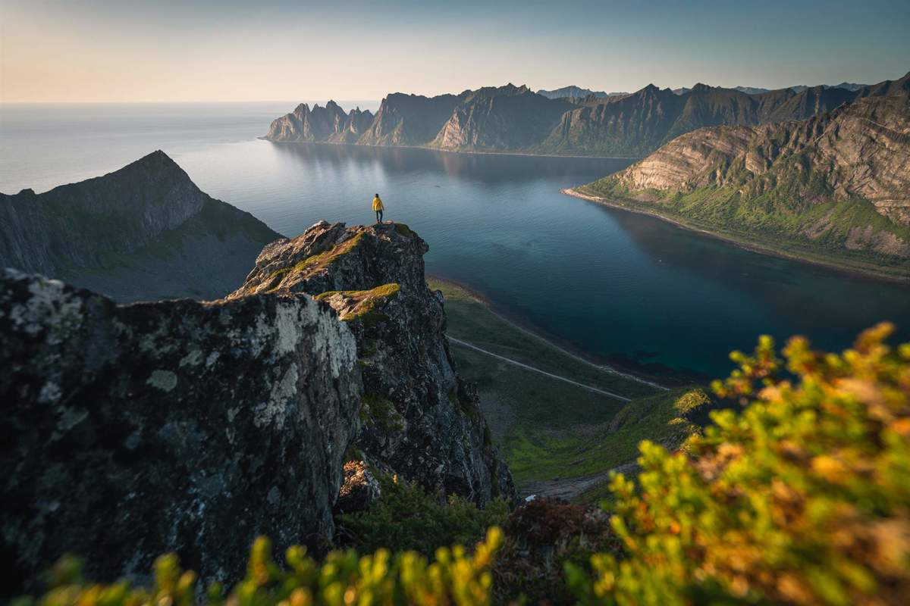
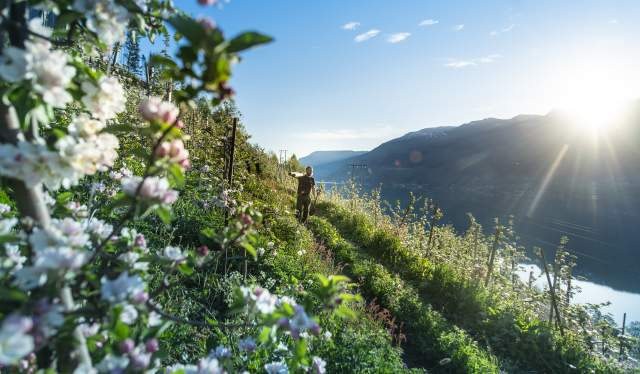
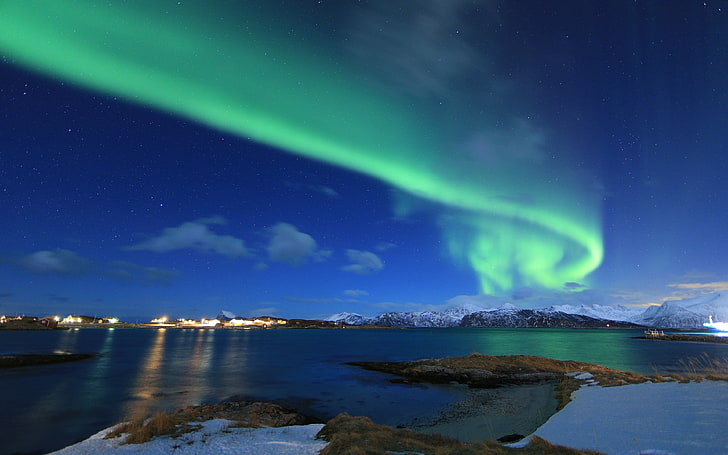

Destinos Turísticos
Fiordos Noruegos
Los fiordos son sin duda uno de los mayores atractivos de Noruega. Lugares como el fiordo de Geiranger,
el fiordo de Nærøyfjord (también Patrimonio de la Humanidad de la UNESCO), el fiordo de Hardanger y el fiordo
de Sognefjord ofrecen paisajes espectaculares con acantilados escarpados, cascadas imponentes y aguas
cristalinas.

Huertos de Hardanger
Los huertos frutales de Hardanger son una de las atracciones más pintorescas y encantadoras de Noruega.
Ubicados en la región de Hardanger, en el oeste del país, estos huertos son conocidos por sus exuberantes
árboles frutales que florecen en primavera, creando un espectáculo de colores impresionante que atrae a
visitantes de todo el mundo.

Aurora Boreal
Las regiones del norte de Noruega, como Tromsø, Lofoten, Svalbard y Finnmark, son algunos de los mejores
lugares para presenciar la aurora boreal. Estas áreas están fuera del círculo polar ártico y ofrecen cielos
oscuros y despejados, así como un paisaje impresionante que complementa la experiencia de ver las luces del
norte.
